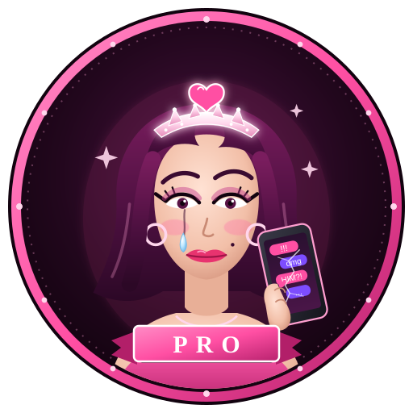

WoW Addon · New Release · Read the disclaimer
Version 3.3Retail · MidnightFreeNewUse at your own risk
Every five minutes, Drama Queen posts a piece of deadpan, real-sounding personal drama to guild chat under your name, acts it out as an emote (stares at their phone. "I think I'm pregnant.") and says it out loud in /say. No lizard jokes, no game jokes: pregnancy scares, arrests, a second phone found in the car, eviction notices, an ex marrying your best friend. It reads like news. That is the point, and also the problem.
New in 3.3, two simple switches: Cause drama in guild posts the drama in guild chat, and Cause drama publicly emotes it and says it in /say for everyone nearby. Tick either, both, or neither. New in 3.2: the Queen herself. A new logo on the panel, and her portrait on the glowing Say it button. New in 3.1: pairs with Full Support, so guildmates can answer your drama with heartfelt support automatically. New in 3.0, the Queen Detector: every copy quietly checks in, so a new panel shows who else is running Drama Queen Pro and how many of you there are, whether they are in your guild, your group, or anywhere on the Drama Queen network. You get a notice in chat when a new queen appears. The panel now has three tabs: Drama, Queen Detector and Settings.
6,000 one-off updates that never repeat until every one has been used, plus storylines that play out over consecutive posts (the pregnancy test, the second phone, the eviction, "Kevin Gym"). It never names real people, never asks anyone for gold, money or help, and leaves out self-harm, suicide and abuse. /say is automatic inside dungeons and raids; out in the world Blizzard requires a key press, so a glowing "Say it" button (or a key binding) delivers the line with one click. Only one copy per guild posts, it pauses in combat and boss-fight chat lockdowns, and you can change the interval from 1 to 60 minutes. Read the disclaimer below before you install it.